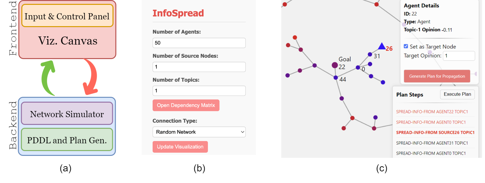
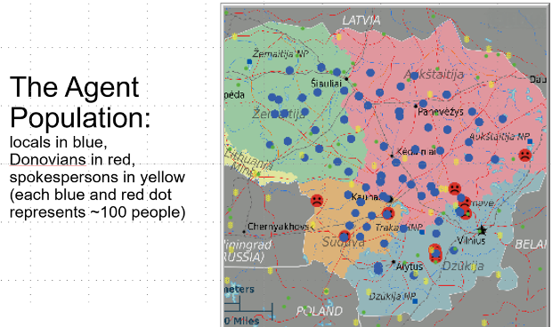

Opinion Network for Online User SafetyContact: Students: Bharath Muppasani, Protik Nag; Faculty: Michael N. Huhns, Vignesh Narayanan, Biplav Srivastava Simulation & Control In the digital age, understanding the dynamics of information spread and opinion formation within networks is paramount. This research introduces an innovative framework that combines the principles of opinion dynamics with the strategic capabilities of Automated Planning. We have developed, to the best of our knowledge, the first-ever numeric PDDL tailored for opinion dynamics. Our tool empowers users to visualize intricate networks, simulate the evolution of opinions, and strategically influence that evolution to achieve specific outcomes. By harnessing Automated Planning techniques, our framework offers a nuanced approach to devise sequences of actions tailored to transition a network from its current opinion landscape to a desired state. This holistic approach provides insights into the intricate interplay of individual nodes within a network and paves the way for targeted interventions. Furthermore, the tool facilitates human-AI collaboration, enabling users to not only understand information spread but also devise practical strategies to mitigate potential harmful outcomes arising from it Representative Publications
|
|  |
|  |
|
Securing Social Media for Seniors In this increasingly global and digitally connected society, we learn and interact with the world and gather information to make decisions by acquiring, processing, and curating digital data shared through cyberspace. While enabling timely distribution of digital data and facilitating rich social interfaces, cyberspace also comes with many vulnerabilities, e.g., manipulated digital data and misinformation that may adversely impact the user and their decision-making process. Although the need for connectivity and social belonging is universal, the segments of society which would benefit the most include children, who are learning about the world, and older adults - typically 65 years or above and referred to as seniors, who cherish old personal relationships. But they are also an extremely vulnerable group to potential cyber-attacks and phishing. In this paper, we lay out some of the current challenges to ensuring safe cyberspace for senior adults, who can be misguided to cause irreparable personal, financial or physical harm to themselves or others through misinformation, and the research opportunities to turn the corner. Representative Publications
|